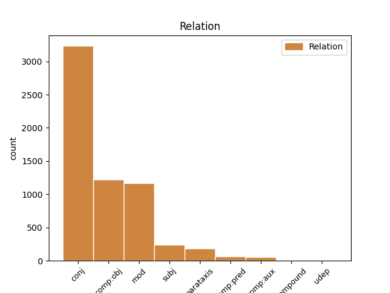
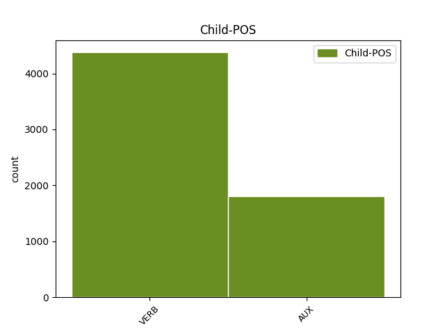

Distribution of features within this leaf


Agreement Rules sorted by frequency.
1 Conviene _ _ _ _ 0 _ _ _
2 que _ _ _ _ 0 _ _ _
3 ahora _ _ _ _ 0 _ _ _
4 , _ _ _ _ 0 _ _ _
5 en _ _ _ _ 0 _ _ _
6 plena _ _ _ _ 0 _ _ _
7 apoteosis _ _ _ _ 0 _ _ _
8 de _ _ _ _ 0 _ _ _
9 pre-presidencia _ _ _ _ 0 _ _ _
10 ( _ _ _ _ 0 _ _ _
11 presidiremos presidir VERB VERB Mood=Ind|Number=Plur|Person=1|Tense=Fut|VerbForm=Fin 0 _ _ _
12 la _ _ _ _ 0 _ _ _
13 Unión _ _ _ _ 0 _ _ _
14 Europea _ _ _ _ 0 _ _ _
15 dentro _ _ _ _ 0 _ _ _
16 de _ _ _ _ 0 _ _ _
17 unos _ _ _ _ 0 _ _ _
18 meses _ _ _ _ 0 _ _ _
19 : _ _ _ _ 0 _ _ _
20 rogativas _ _ _ _ 0 _ _ _
21 y _ _ _ _ 0 _ _ _
22 festejos _ _ _ _ 0 _ _ _
23 son ser AUX AUX Mood=Ind|Number=Plur|Person=3|Tense=Pres|VerbForm=Fin 11 mod _ _
24 de _ _ _ _ 0 _ _ _
25 rigor _ _ _ _ 0 _ _ _
26 ) _ _ _ _ 0 _ _ _
27 reflexionemos _ _ _ _ 0 _ _ _
28 críticamente _ _ _ _ 0 _ _ _
29 y _ _ _ _ 0 _ _ _
30 nos _ _ _ _ 0 _ _ _
31 hagamos _ _ _ _ 0 _ _ _
32 un _ _ _ _ 0 _ _ _
33 lifting _ _ _ _ 0 _ _ _
34 metodológico _ _ _ _ 0 _ _ _
35 . _ _ _ _ 0 _ _ _
Disagree Examples:
1 Pero _ _ _ _ 0 _ _ _
2 , _ _ _ _ 0 _ _ _
3 por _ _ _ _ 0 _ _ _
4 otra _ _ _ _ 0 _ _ _
5 parte _ _ _ _ 0 _ _ _
6 , _ _ _ _ 0 _ _ _
7 ya _ _ _ _ 0 _ _ _
8 ha _ _ _ _ 0 _ _ _
9 anunciado _ _ _ _ 0 _ _ _
10 que _ _ _ _ 0 _ _ _
11 apelará apelar VERB VERB Mood=Ind|Number=Sing|Person=3|Tense=Fut|VerbForm=Fin 0 _ _ _
12 cualquier _ _ _ _ 0 _ _ _
13 dictamen _ _ _ _ 0 _ _ _
14 que _ _ _ _ 0 _ _ _
15 establezca _ _ _ _ 0 _ _ _
16 su _ _ _ _ 0 _ _ _
17 visión _ _ _ _ 0 _ _ _
18 , _ _ _ _ 0 _ _ _
19 lo _ _ _ _ 0 _ _ _
20 cual _ _ _ _ 0 _ _ _
21 prolongaría prolongar VERB VERB Mood=Cnd|Number=Sing|Person=1|VerbForm=Fin 11 mod _ _
22 el _ _ _ _ 0 _ _ _
23 proceso _ _ _ _ 0 _ _ _
24 judicial _ _ _ _ 0 _ _ _
25 muchos _ _ _ _ 0 _ _ _
26 meses _ _ _ _ 0 _ _ _
27 . _ _ _ _ 0 _ _ _
1 En _ _ _ _ 0 _ _ _
2 su _ _ _ _ 0 _ _ _
3 editorial _ _ _ _ 0 _ _ _
4 , _ _ _ _ 0 _ _ _
5 el _ _ _ _ 0 _ _ _
6 diario _ _ _ _ 0 _ _ _
7 analiza analizar VERB VERB Mood=Ind|Number=Sing|Person=3|Tense=Pres|VerbForm=Fin 0 _ _ _
8 la _ _ _ _ 0 _ _ _
9 situación _ _ _ _ 0 _ _ _
10 económica _ _ _ _ 0 _ _ _
11 del _ _ _ _ 0 _ _ _
12 país _ _ _ _ 0 _ _ _
13 tomando _ _ _ _ 0 _ _ _
14 como _ _ _ _ 0 _ _ _
15 base _ _ _ _ 0 _ _ _
16 el _ _ _ _ 0 _ _ _
17 informe _ _ _ _ 0 _ _ _
18 difundido _ _ _ _ 0 _ _ _
19 ayer _ _ _ _ 0 _ _ _
20 de _ _ _ _ 0 _ _ _
21 la _ _ _ _ 0 _ _ _
22 OCDE _ _ _ _ 0 _ _ _
23 y _ _ _ _ 0 _ _ _
24 asegura asegurar VERB VERB Mood=Imp|Number=Sing|Person=2|VerbForm=Fin 7 conj _ _
25 que _ _ _ _ 0 _ _ _
26 el _ _ _ _ 0 _ _ _
27 caballo _ _ _ _ 0 _ _ _
28 de _ _ _ _ 0 _ _ _
29 batalla _ _ _ _ 0 _ _ _
30 de _ _ _ _ 0 _ _ _
31 Aznar _ _ _ _ 0 _ _ _
32 en _ _ _ _ 0 _ _ _
33 esta _ _ _ _ 0 _ _ _
34 legislatura _ _ _ _ 0 _ _ _
35 será _ _ _ _ 0 _ _ _
36 " _ _ _ _ 0 _ _ _
37 convencer _ _ _ _ 0 _ _ _
38 a _ _ _ _ 0 _ _ _
39 la _ _ _ _ 0 _ _ _
40 opinión _ _ _ _ 0 _ _ _
41 pública _ _ _ _ 0 _ _ _
42 de _ _ _ _ 0 _ _ _
43 los _ _ _ _ 0 _ _ _
44 riesgos _ _ _ _ 0 _ _ _
45 de _ _ _ _ 0 _ _ _
46 un _ _ _ _ 0 _ _ _
47 consumo _ _ _ _ 0 _ _ _
48 y _ _ _ _ 0 _ _ _
49 de _ _ _ _ 0 _ _ _
50 un _ _ _ _ 0 _ _ _
51 crecimiento _ _ _ _ 0 _ _ _
52 desbocado _ _ _ _ 0 _ _ _
53 , _ _ _ _ 0 _ _ _
54 hacer _ _ _ _ 0 _ _ _
55 le _ _ _ _ 0 _ _ _
56 ver _ _ _ _ 0 _ _ _
57 la _ _ _ _ 0 _ _ _
58 urgencia _ _ _ _ 0 _ _ _
59 de _ _ _ _ 0 _ _ _
60 reformar _ _ _ _ 0 _ _ _
61 el _ _ _ _ 0 _ _ _
62 mercado _ _ _ _ 0 _ _ _
63 laboral _ _ _ _ 0 _ _ _
64 y _ _ _ _ 0 _ _ _
65 de _ _ _ _ 0 _ _ _
66 liberalizar _ _ _ _ 0 _ _ _
67 la _ _ _ _ 0 _ _ _
68 economía _ _ _ _ 0 _ _ _
69 , _ _ _ _ 0 _ _ _
70 escenificar _ _ _ _ 0 _ _ _
71 los _ _ _ _ 0 _ _ _
72 peligros _ _ _ _ 0 _ _ _
73 de _ _ _ _ 0 _ _ _
74 la _ _ _ _ 0 _ _ _
75 inflación _ _ _ _ 0 _ _ _
76 " _ _ _ _ 0 _ _ _
77 . _ _ _ _ 0 _ _ _
1 El _ _ _ _ 0 _ _ _
2 " _ _ _ _ 0 _ _ _
3 proyecto _ _ _ _ 0 _ _ _
4 de _ _ _ _ 0 _ _ _
5 protocolo _ _ _ _ 0 _ _ _
6 de _ _ _ _ 0 _ _ _
7 acuerdo _ _ _ _ 0 _ _ _
8 " _ _ _ _ 0 _ _ _
9 de _ _ _ _ 0 _ _ _
10 nueve _ _ _ _ 0 _ _ _
11 puntos _ _ _ _ 0 _ _ _
12 , _ _ _ _ 0 _ _ _
13 que _ _ _ _ 0 _ _ _
14 los _ _ _ _ 0 _ _ _
15 agentes _ _ _ _ 0 _ _ _
16 sociales _ _ _ _ 0 _ _ _
17 volverán _ _ _ _ 0 _ _ _
18 a _ _ _ _ 0 _ _ _
19 abordar _ _ _ _ 0 _ _ _
20 el _ _ _ _ 0 _ _ _
21 próximo _ _ _ _ 0 _ _ _
22 lunes _ _ _ _ 0 _ _ _
23 , _ _ _ _ 0 _ _ _
24 reafirma reafirmar VERB VERB Mood=Ind|Number=Sing|Person=3|Tense=Pres|VerbForm=Fin 0 _ _ _
25 la _ _ _ _ 0 _ _ _
26 relación _ _ _ _ 0 _ _ _
27 entre _ _ _ _ 0 _ _ _
28 la _ _ _ _ 0 _ _ _
29 " _ _ _ _ 0 _ _ _
30 indemnización _ _ _ _ 0 _ _ _
31 " _ _ _ _ 0 _ _ _
32 de _ _ _ _ 0 _ _ _
33 desempleo _ _ _ _ 0 _ _ _
34 y _ _ _ _ 0 _ _ _
35 la _ _ _ _ 0 _ _ _
36 " _ _ _ _ 0 _ _ _
37 ayuda _ _ _ _ 0 _ _ _
38 " _ _ _ _ 0 _ _ _
39 para _ _ _ _ 0 _ _ _
40 volver _ _ _ _ 0 _ _ _
41 a _ _ _ _ 0 _ _ _
42 encontrar _ _ _ _ 0 _ _ _
43 un _ _ _ _ 0 _ _ _
44 trabajo _ _ _ _ 0 _ _ _
45 , _ _ _ _ 0 _ _ _
46 muy _ _ _ _ 0 _ _ _
47 contestada _ _ _ _ 0 _ _ _
48 por _ _ _ _ 0 _ _ _
49 los _ _ _ _ 0 _ _ _
50 sindicatos _ _ _ _ 0 _ _ _
51 , _ _ _ _ 0 _ _ _
52 pero _ _ _ _ 0 _ _ _
53 su _ _ _ _ 0 _ _ _
54 aplicación _ _ _ _ 0 _ _ _
55 sería ser AUX AUX Mood=Cnd|Number=Sing|Person=1|VerbForm=Fin 24 conj _ _
56 progresiva _ _ _ _ 0 _ _ _
57 . _ _ _ _ 0 _ _ _
1 Vázquez _ _ _ _ 0 _ _ _
2 Quintana _ _ _ _ 0 _ _ _
3 intervino _ _ _ _ 0 _ _ _
4 hoy _ _ _ _ 0 _ _ _
5 en _ _ _ _ 0 _ _ _
6 unas _ _ _ _ 0 _ _ _
7 jornadas _ _ _ _ 0 _ _ _
8 sobre _ _ _ _ 0 _ _ _
9 " _ _ _ _ 0 _ _ _
10 Acceso _ _ _ _ 0 _ _ _
11 radio _ _ _ _ 0 _ _ _
12 en _ _ _ _ 0 _ _ _
13 el _ _ _ _ 0 _ _ _
14 bucle _ _ _ _ 0 _ _ _
15 local _ _ _ _ 0 _ _ _
16 de _ _ _ _ 0 _ _ _
17 abonado _ _ _ _ 0 _ _ _
18 " _ _ _ _ 0 _ _ _
19 , _ _ _ _ 0 _ _ _
20 organizadas _ _ _ _ 0 _ _ _
21 por _ _ _ _ 0 _ _ _
22 APD _ _ _ _ 0 _ _ _
23 ( _ _ _ _ 0 _ _ _
24 Asociación _ _ _ _ 0 _ _ _
25 para _ _ _ _ 0 _ _ _
26 el _ _ _ _ 0 _ _ _
27 Progreso _ _ _ _ 0 _ _ _
28 de _ _ _ _ 0 _ _ _
29 la _ _ _ _ 0 _ _ _
30 Dirección _ _ _ _ 0 _ _ _
31 ) _ _ _ _ 0 _ _ _
32 y _ _ _ _ 0 _ _ _
33 dijo _ _ _ _ 0 _ _ _
34 que _ _ _ _ 0 _ _ _
35 las _ _ _ _ 0 _ _ _
36 del _ _ _ _ 0 _ _ _
37 modelo _ _ _ _ 0 _ _ _
38 concesión _ _ _ _ 0 _ _ _
39 de _ _ _ _ 0 _ _ _
40 licencias _ _ _ _ 0 _ _ _
41 español _ _ _ _ 0 _ _ _
42 , _ _ _ _ 0 _ _ _
43 por _ _ _ _ 0 _ _ _
44 concurso _ _ _ _ 0 _ _ _
45 y _ _ _ _ 0 _ _ _
46 no _ _ _ _ 0 _ _ _
47 por _ _ _ _ 0 _ _ _
48 subasta _ _ _ _ 0 _ _ _
49 , _ _ _ _ 0 _ _ _
50 hace _ _ _ _ 0 _ _ _
51 que _ _ _ _ 0 _ _ _
52 el _ _ _ _ 0 _ _ _
53 Estado _ _ _ _ 0 _ _ _
54 ingrese ingresar VERB VERB Mood=Sub|Number=Sing|Person=1|Tense=Pres|VerbForm=Fin 0 _ _ _
55 menos _ _ _ _ 0 _ _ _
56 pero _ _ _ _ 0 _ _ _
57 a _ _ _ _ 0 _ _ _
58 cambio _ _ _ _ 0 _ _ _
59 los _ _ _ _ 0 _ _ _
60 operadores _ _ _ _ 0 _ _ _
61 pueden poder AUX AUX Mood=Ind|Number=Plur|Person=3|Tense=Pres|VerbForm=Fin 54 conj _ _
62 desarrollar _ _ _ _ 0 _ _ _
63 su _ _ _ _ 0 _ _ _
64 red _ _ _ _ 0 _ _ _
65 más _ _ _ _ 0 _ _ _
66 deprisa _ _ _ _ 0 _ _ _
67 y _ _ _ _ 0 _ _ _
68 amortizar _ _ _ _ 0 _ _ _
69 antes _ _ _ _ 0 _ _ _
70 sus _ _ _ _ 0 _ _ _
71 inversiones _ _ _ _ 0 _ _ _
72 . _ _ _ _ 0 _ _ _
1 El _ _ _ _ 0 _ _ _
2 " _ _ _ _ 0 _ _ _
3 proyecto _ _ _ _ 0 _ _ _
4 de _ _ _ _ 0 _ _ _
5 protocolo _ _ _ _ 0 _ _ _
6 de _ _ _ _ 0 _ _ _
7 acuerdo _ _ _ _ 0 _ _ _
8 " _ _ _ _ 0 _ _ _
9 , _ _ _ _ 0 _ _ _
10 de _ _ _ _ 0 _ _ _
11 nueve _ _ _ _ 0 _ _ _
12 puntos _ _ _ _ 0 _ _ _
13 , _ _ _ _ 0 _ _ _
14 establece establecer VERB VERB Mood=Ind|Number=Sing|Person=3|Tense=Pres|VerbForm=Fin 0 _ _ _
15 un _ _ _ _ 0 _ _ _
16 nexo _ _ _ _ 0 _ _ _
17 de _ _ _ _ 0 _ _ _
18 unión _ _ _ _ 0 _ _ _
19 entre _ _ _ _ 0 _ _ _
20 la _ _ _ _ 0 _ _ _
21 " _ _ _ _ 0 _ _ _
22 indemnización _ _ _ _ 0 _ _ _
23 " _ _ _ _ 0 _ _ _
24 de _ _ _ _ 0 _ _ _
25 desempleo _ _ _ _ 0 _ _ _
26 y _ _ _ _ 0 _ _ _
27 una _ _ _ _ 0 _ _ _
28 " _ _ _ _ 0 _ _ _
29 ayuda _ _ _ _ 0 _ _ _
30 " _ _ _ _ 0 _ _ _
31 condicionada _ _ _ _ 0 _ _ _
32 para _ _ _ _ 0 _ _ _
33 volver _ _ _ _ 0 _ _ _
34 a _ _ _ _ 0 _ _ _
35 encontrar _ _ _ _ 0 _ _ _
36 un _ _ _ _ 0 _ _ _
37 trabajo _ _ _ _ 0 _ _ _
38 , _ _ _ _ 0 _ _ _
39 muy _ _ _ _ 0 _ _ _
40 contestada _ _ _ _ 0 _ _ _
41 por _ _ _ _ 0 _ _ _
42 los _ _ _ _ 0 _ _ _
43 sindicatos _ _ _ _ 0 _ _ _
44 , _ _ _ _ 0 _ _ _
45 pero _ _ _ _ 0 _ _ _
46 su _ _ _ _ 0 _ _ _
47 aplicación _ _ _ _ 0 _ _ _
48 sería ser AUX AUX Mood=Cnd|Number=Sing|Person=1|VerbForm=Fin 14 conj _ _
49 progresiva _ _ _ _ 0 _ _ _
50 . _ _ _ _ 0 _ _ _